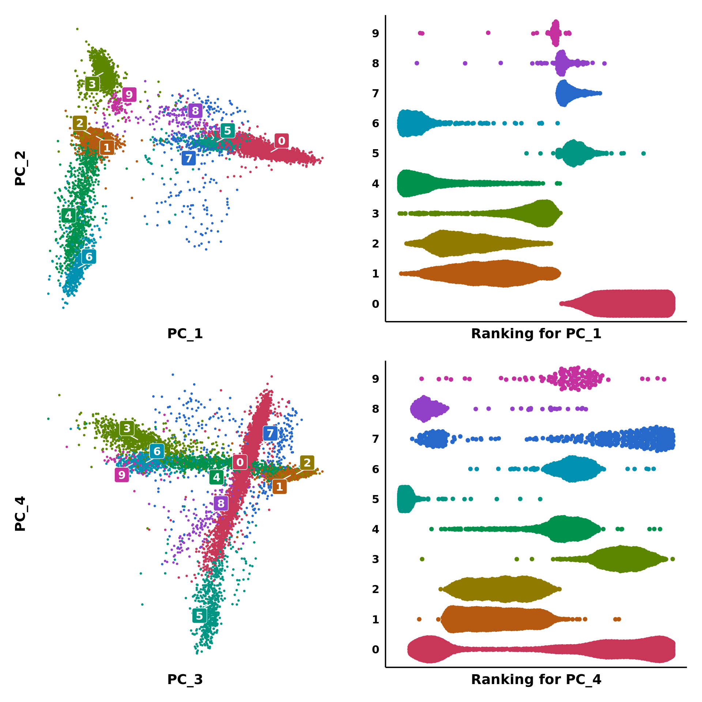
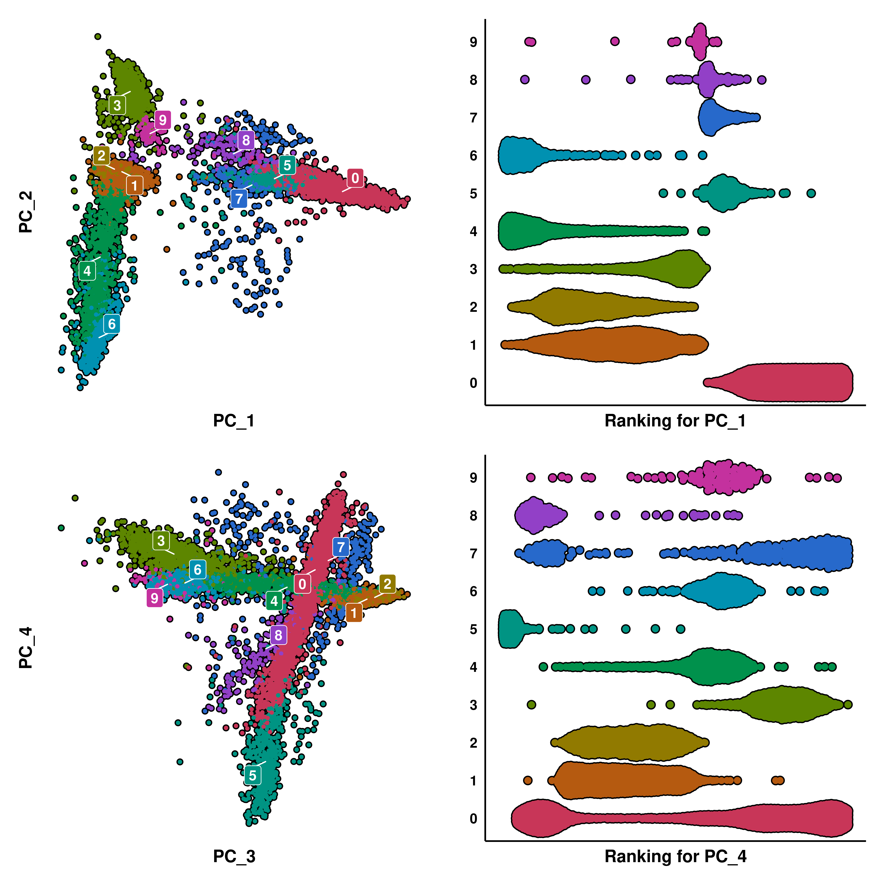
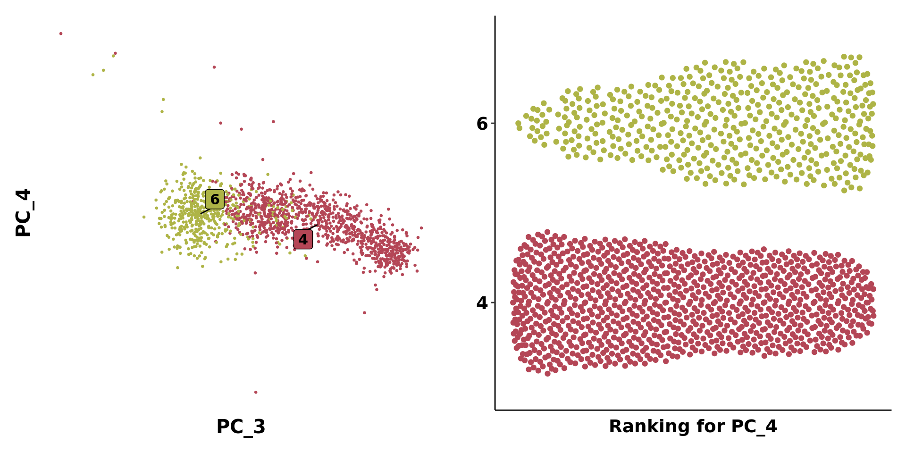
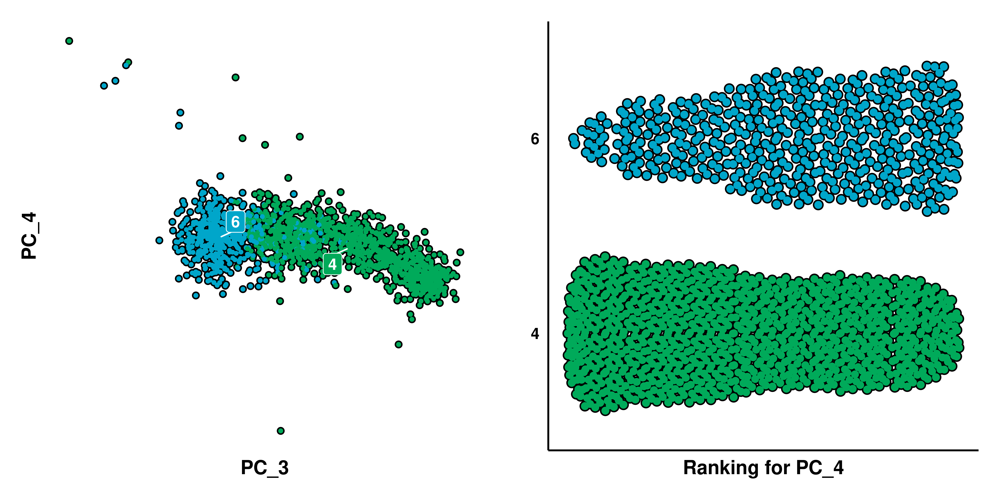
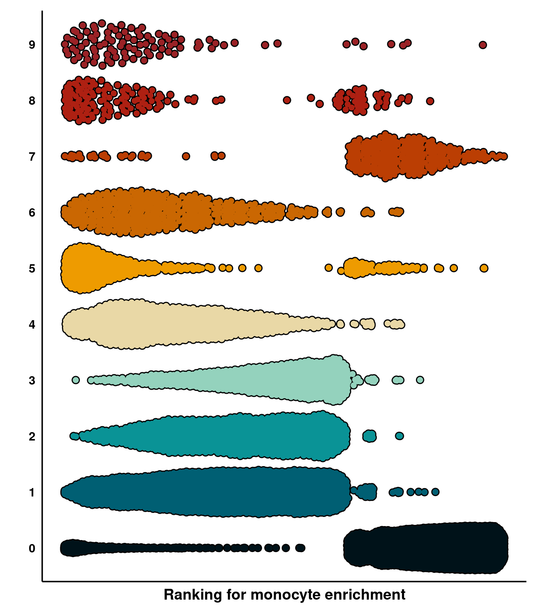

4 Bee Swarm plots
This is a very interesting plot. It stems from the idea that we can order (rank) the cells in a given variable. This variable has to be a continuous variable, for a better representation. The order goes from lowest to maximum value. Then, the cells are grouped into any other variable of interest and displayed in a scatter plot fashion.
Put it into an example, let’s say that we have our cells queried for enrichment in a given list of genes. This can be done using Seurat::AddModuleScore(), and returns one score for each cell. This would be our continuous variable. That, we can rank (i.e: provide an order from lowest to highest), giving the cell with the lowest enrichment score the first rank and the one with the maximum value the last rank. If we were to plot this rank right away, we will see that this behaves as a linear distribution:
# Compute enrichment.
gene_list <- c("OLIG1", "MBP")
sample <- Seurat::AddModuleScore(sample, features = list(gene_list), name = "testing_list")
# Rank the enrichment scores.
sample$rank <- rank(sample$testing_list1)
# Visualize the two distribution.
p1 <- SCpubr::do_ViolinPlot(sample = sample,
feature = "testing_list1",
group.by = "orig.ident")
p2 <- sample@meta.data %>% # Extract metadata
dplyr::mutate(cell_name = rownames(sample@meta.data)) %>% # Get the cell names.
dplyr::select(.data$cell_name, .data$rank) %>% # Select the columns to plot.
dplyr::arrange(.data$rank) %>% # Reorder the rows.
dplyr::mutate(cell_name = factor(.data$cell_name, levels = .data$cell_name)) %>% # Conver to factor for plotting.
ggplot2::ggplot(mapping = ggplot2::aes(x = .data$cell_name, y = .data$rank)) +
ggplot2::geom_point() +
ggplot2::theme(axis.text = ggplot2::element_blank(),
axis.ticks = ggplot2::element_blank()) +
ggplot2::xlab("Cell name") +
ggplot2::ylab("Rank")
p <- p1 | p2
p
As we can observe, the ranks behave in a linear fashion and that is expected. However, the interesting part comes when we further subset this distribution by another variable:
p <- sample@meta.data %>% # Extract metadata
dplyr::mutate(cell_name = rownames(sample@meta.data)) %>% # Get the cell names.
dplyr::select(.data$cell_name, .data$rank, .data$seurat_clusters) %>% # Select the columns to plot.
dplyr::arrange(.data$rank) %>% # Reorder the rows.
dplyr::mutate(cell_name = factor(.data$cell_name, levels = .data$cell_name)) %>% # Conver to factor for plotting.
ggplot2::ggplot(mapping = ggplot2::aes(x = .data$cell_name, y = .data$rank)) +
ggplot2::geom_point() +
ggplot2::theme(axis.text = ggplot2::element_blank(),
axis.ticks = ggplot2::element_blank()) +
ggplot2::xlab("Cell name") +
ggplot2::ylab("Rank") +
ggplot2::facet_wrap("seurat_clusters", ncol = 5)
p
Here, we can see that not all clusters show the same distribution or ranks. There will be clusters where the distribution is shifted to the higher ranks and others to the lower ones. Plotting this differential distributions in a nice way is the aim of SCpubr::do_BeeSwarmPlot(). This is achieved by using the ggbeeswarm package. The idea of using the ggbeeswarm::geom_quasirandom() geometry provided by this package and implement it for single-cell analyses came from this tutorial from the Broad Institute.
4.1 Using categorical variables
Let’s say we want to focus on how much each cluster is driven by the PC_1 and PC_2. The first thought is to just use SCpubr::do_Dimplot() to plot the PCA embedding instead of the UMAP. We also query PC_3 and PC_4 to have a not-so-clear example.
p1 <- SCpubr::do_DimPlot(sample,
reduction = "pca",
label = TRUE,
legend.position = "none",
dims = c(1, 2))
p2 <- SCpubr::do_DimPlot(sample,
reduction = "pca",
label = TRUE,
legend.position = "none",
dims = c(3, 4))
p <- p1 | p2
p
With this, we get right away a decent overview. Clusters 0, 5, 7 and 8 separate on PC_1 from the rest. However, in many cases this will not be clear, such as the image on the right. This is where Bee Swarm plots come in handy. This is implemented in SCpubr::do_BeeSwarmPlot(). This function needs the user to provide: - The variable to rank to feature_to_rank. - The groups to divide the plot into to group.by. - Whether the output should be colored with a categorical or continuous scale, with continuous_feature.
p1 <- SCpubr::do_DimPlot(sample = sample,
reduction = "pca",
label = TRUE,
legend.position = "none",
dims = c(1, 2))
p2 <- SCpubr::do_DimPlot(sample = sample,
reduction = "pca",
label = TRUE,
legend.position = "none",
dims = c(3, 4))
p3 <- SCpubr::do_BeeSwarmPlot(sample = sample,
feature_to_rank = "PC_1",
group.by = "seurat_clusters",
continuous_feature = FALSE)
p4 <- SCpubr::do_BeeSwarmPlot(sample = sample,
feature_to_rank = "PC_4",
group.by = "seurat_clusters",
continuous_feature = FALSE)
p <- (p1 | p3) / (p2 | p4)
p
Here, we have selected PC_1 and PC_4. We can observe how the X axis of the Bee Swarm plot displays the ordering (rank) of all of the cells across the selected feature. Focusing on PC_1, we can see that cluster 0 is completely shifted to the right on PC_1, with is nicely displayed in the Bee Swarm plot by having all of the cells also ranked high (the higher the rank, the bigger the “value” of the feature to rank, in this case, the PC_1 value). In the case of PC_4, the Bee Swarm plot nicely shows which clusters lay on the upper, lower or middle part of the PC_4.
A very important thing to note in these kind of plots is that no cells will have the same rank. This is, imagine a scenario like PC_4, but we artificially remove clusters 0, 3, 5, 7, 8, 9, leaving only those forming a “straight line” in PC_4. The nature of this plot will also separate the remaining clusters:
# Clusters to exclude.
clusters_exclude <- c("0", "3", "5", "7", "8", "9")
# Keep the original coloring.
cols.use <- colorspace::qualitative_hcl(length(levels(sample)),
palette = "Dark 3")
names(cols.use) <- levels(sample)
# Only provide the needed colors. If more are provided, an error is thrown.
cols.use <- cols.use[!(names(cols.use) %in% clusters_exclude)]
p1 <- SCpubr::do_DimPlot(sample = sample[, !(sample$seurat_clusters %in% clusters_exclude)],
reduction = "pca",
label = TRUE,
legend.position = "none",
dims = c(3, 4),
colors.use = cols.use)
p2 <- SCpubr::do_BeeSwarmPlot(sample = sample[, !(sample$seurat_clusters %in% clusters_exclude)],
feature_to_rank = "PC_4",
group.by = "seurat_clusters",
continuous_feature = FALSE,
colors.use = cols.use)
p <- p1 | p2
p
See, we still clearly see two groups, formed by clusters 1 and 2, and clusters 4 and 6. We could even remove clusters 1 and 2 and still see a similar effect.
# Clusters to exclude.
clusters_exclude <- c("0", "1", "2", "3", "5", "7", "8", "9")
# Keep the original coloring.
cols.use <- colorspace::qualitative_hcl(length(levels(sample)),
palette = "Dark 3")
names(cols.use) <- levels(sample)
# Only provide the needed colors. If more are provided, an error is thrown.
cols.use <- cols.use[!(names(cols.use) %in% clusters_exclude)]
p1 <- SCpubr::do_DimPlot(sample = sample[, !(sample$seurat_clusters %in% clusters_exclude)],
reduction = "pca",
label = TRUE,
legend.position = "none",
dims = c(3, 4),
colors.use = cols.use)
p2 <- SCpubr::do_BeeSwarmPlot(sample = sample[, !(sample$seurat_clusters %in% clusters_exclude)],
feature_to_rank = "PC_4",
group.by = "seurat_clusters",
continuous_feature = FALSE,
colors.use = cols.use)
p <- p1 | p2
p
As can be seen here, both clusters now span all X axis. The cells have still ranked, therefore showing a cloud of dots. With this, we would just want that, as with any data visualization technique, each plot comes with a set of benefits and caveats. This visualization suffers from trying to plot highly similar values. Therefore, it is key to understand the nature of the variable you want to rank beforehand.
4.2 Using continuous variables
There are also scenarios in which we want to rank the cells to a continuous variable, but instead of showing colors for each group (which is anyway depicted in the Y axis), we want to introduce a continuous color scale. This is specially interesting to assess enrichment of clusters towards a given set of features.
# Set up list of a genes to compute enrichment. Let's use a monocyte signature.
genes.use <- c("CD14", "LYZ")
# Compute enrichment and rename the output.
sample <- Seurat::AddModuleScore(sample,
features = genes.use,
name = "Monocyte_signature")
sample$Monocyte_signature <- sample$Monocyte_signature1
sample$Monocyte_signature1 <- NULL
p1 <- SCpubr::do_DimPlot(sample = sample,
label = TRUE,
legend.position = "none")
p2 <- SCpubr::do_FeaturePlot(sample = sample,
features = "Monocyte_signature",
legend.title = "Monocyte signature")
p3 <- SCpubr::do_BeeSwarmPlot(sample = sample,
feature_to_rank = "Monocyte_signature",
group.by = "seurat_clusters",
continuous_feature = TRUE,
legend.title = "Monocyte signature")
p <- p1 | p2 | p3
p
By using this combination of figures, we can also assess that the monocyte signature seems to be predominantly enriched in clusters 0 and 7.